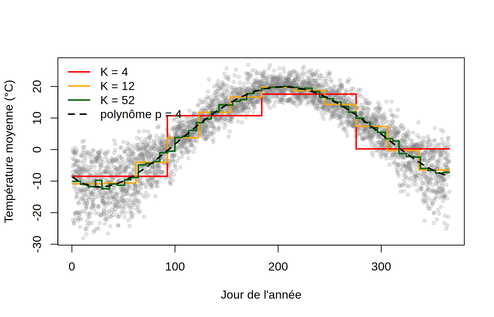
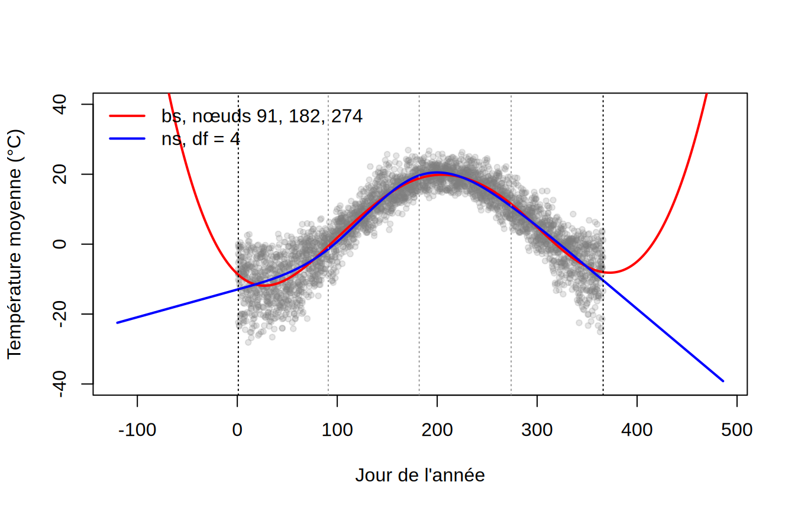
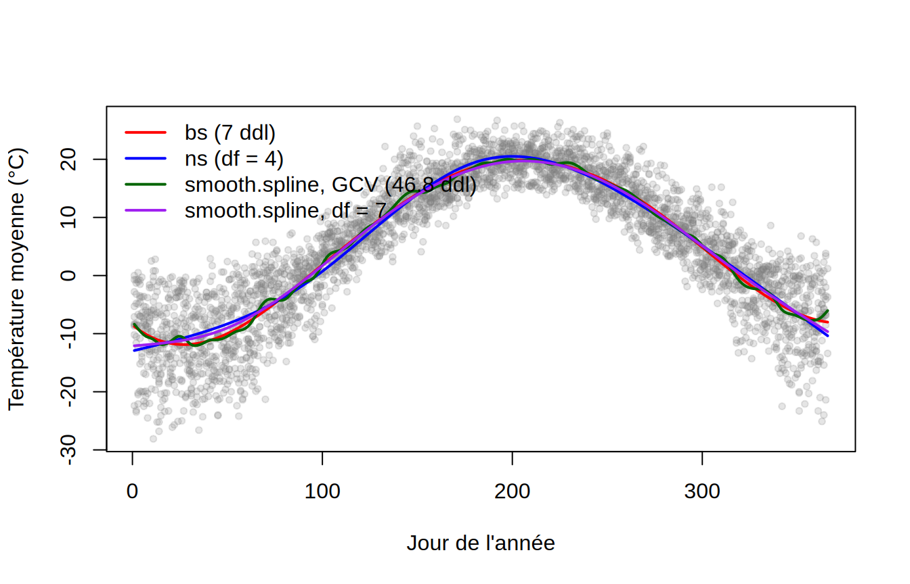

📘SujetRégression non linéaire : polynômes et splines
NoteÀ propos de ces solutions
Les réponses ci-dessous sont une proposition de solution. D’autres choix de nœuds, de grilles de degrés ou de partitions pour la validation croisée sont acceptables tant qu’ils sont justifiés.
Les 3608 observations sont les températures moyennes quotidiennes de 2015 à 2024 à l’aéroport Jean-Lesage (45 journées sans mesure ont été écartées). La variable explicative, le jour de l’année, ne prend que 366 valeurs distinctes, chacune répétée environ dix fois (une par année) : ce détail aura son importance au point 5.
1. Régression polynomiale
degres <-c(1, 2, 3, 5, 10)mods.poly <-lapply(degres, function(p) lm(mean_temp ~poly(jour_annee, p, raw =TRUE), data = temp))plot(mean_temp ~ jour_annee, data = temp, pch =20, col =adjustcolor("grey50", 0.2),xlab ="Jour de l'année", ylab ="Température moyenne (°C)")for (j inseq_along(degres))lines(xg$jour_annee, predict(mods.poly[[j]], xg), col = couleurs[j], lwd =2)legend("topleft", legend =paste("p =", degres), col = couleurs, lwd =2, bty ="n")
La droite est inadéquate, et la parabole donne une première approximation grossière du cycle (froid aux deux bouts, chaud au milieu), mais une parabole est symétrique autour de son sommet alors que le cycle ne l’est pas : le minimum est atteint vers la fin janvier (jour 27) et le maximum vers la fin juillet (jour 205), soit un décalage d’environ trois semaines par rapport aux solstices, et la montée printanière est plus rapide que la descente automnale. Il faut au moins le degré 3 pour rendre cette asymétrie, et les degrés 3 à 5 donnent des courbes très voisines.
Un cycle annuel devrait se refermer : le 31 décembre et le 1er janvier sont des journées consécutives, et \(f(1)\) devrait être proche de \(f(366)\). Rien, dans un polynôme, n’impose cette contrainte. La droite et la parabole ratent complètement (écart de plus de 12 °C), le degré 3 ferme le cycle presque parfaitement, et le degré 5 laisse un écart inférieur à 1 °C. Au degré 10, l’écart se creuse de nouveau (près de 3 °C) : la courbe ondule près du jour de l’An, où le polynôme doit raccorder des pentes extrêmes avec des termes de degré élevé. C’est le défaut classique des polynômes de degré élevé, dont le comportement global est dicté par l’ajustement local ; l’effet reste modéré ici parce que les observations sont aussi nombreuses aux bords qu’au centre du domaine.
2. Choix du degré : AIC, BIC et validation croisée
Pour le LOOCV on utilise la formule explicite des notes, valable pour tout modèle linéaire : \[
VC_{(n)} = \frac{1}{n}\sum_{i=1}^n\left(\frac{y_i - \hat y_i}{1 - h_i}\right)^2 .
\] Pour la validation croisée à 10 blocs, on utilise cv.glm en réinitialisant la graine avant chaque modèle, afin que tous soient évalués sur la même partition.
grille.p <-1:10loocv <-function(m) mean((residuals(m) / (1-hatvalues(m)))^2)crit <-t(sapply(grille.p, function(p) { m <-lm(mean_temp ~poly(jour_annee, p, raw =TRUE), data = temp) g <-glm(mean_temp ~poly(jour_annee, p, raw =TRUE), data = temp)set.seed(4300)c(p = p, AIC =AIC(m), BIC =BIC(m), LOOCV =loocv(m), CV10 =cv.glm(temp, g, K =10)$delta[1])}))round(crit, 2)
p.opt <- grille.p[which.min(crit[, "BIC"])]mod.p <-lm(mean_temp ~poly(jour_annee, p.opt, raw =TRUE), data = temp)
Tous les critères chutent fortement du degré 1 au degré 4 (l’erreur LOOCV passe de 129 à 21 °C²), puis deviennent presque plats. Les quatre critères s’entendent sur le degré 4 ; les degrés 5 à 10 donnent des erreurs à quelques centièmes de °C² du minimum, négligeables. Avec \(n = 3608\), chaque paramètre supplémentaire coûte très peu en variance et les critères ne pénalisent presque plus la complexité : c’est le biais, nul à partir du degré 4, qui tranche. L’AIC et le LOOCV sont très proches d’un degré à l’autre, ce qui n’est pas un hasard : pour un modèle linéaire gaussien, l’AIC est asymptotiquement équivalent au LOOCV.
3. Fonctions constantes par morceaux
Ks <-c(4, 12, 52)plot(mean_temp ~ jour_annee, data = temp, pch =20, col =adjustcolor("grey50", 0.2),xlab ="Jour de l'année", ylab ="Température moyenne (°C)")for (j inseq_along(Ks)) { m <-lm(mean_temp ~cut(jour_annee, Ks[j], include.lowest =TRUE), data = temp)lines(xg$jour_annee, predict(m, xg), col = couleurs[j], lwd =2, type ="s")}lines(xg$jour_annee, predict(mod.p, xg), col ="black", lwd =2, lty =2)legend("topleft", c(paste("K =", Ks), paste("polynôme p =", p.opt)),col =c(couleurs[1:3], "black"), lwd =2, lty =c(1, 1, 1, 2), bty ="n")

sapply(Ks, function(K) loocv(lm(mean_temp ~cut(jour_annee, K, include.lowest =TRUE), data = temp)))
[1] 42.76699 23.92206 21.46924
loocv(mod.p)
[1] 21.22717
La régression par morceaux revient à discrétiser le jour de l’année en \(K\) classes et à ajuster une ANOVA à un facteur : \(\hat f\) est la moyenne de la température dans chaque classe. Avec \(K = 12\), chaque classe couvre environ 30 jours : \(\hat f\) est, à quelques jours près, la suite des douze moyennes mensuelles, le résumé que publient les services météorologiques. Avec \(K = 52\), ce sont des moyennes hebdomadaires. Pourtant, même avec 52 paramètres, l’erreur LOOCV reste légèrement supérieure à celle du polynôme de degré 4, qui n’en a que 5 : la fonction en escalier gaspille des paramètres à estimer séparément des moyennes que le polynôme relie par une courbe lisse, et chaque marche introduit un biais à l’intérieur de la classe (la température varie de plusieurs degrés au cours d’un mois de printemps). Avec \(K = 4\), les plateaux sont trop larges et l’erreur double. L’intérêt de cette approche est surtout pédagogique : elle introduit l’idée de bases de fonctions locales, qui mène aux splines.
4. Splines de régression cubiques et splines naturelles
On place les nœuds aux jours 91, 182 et 274, c’est-à-dire au début d’avril, de juillet et d’octobre. Ce choix divise l’année en quatre trimestres de même longueur, qui contiennent le même nombre d’observations (les quartiles du jour de l’année donnent les mêmes nœuds à un jour près), et il encadre à peu près les saisons. Avec \(K-1 = 3\) nœuds intérieurs, soit \(K = 4\) intervalles, et \(p = 3\), la spline cubique a \(K + p = 7\) degrés de liberté (6 colonnes dans bs plus l’ordonnée à l’origine).
Pour comparer le comportement hors de la plage observée, on prolonge la grille de part et d’autre. Un jour négatif est en fait un jour de décembre de l’année précédente et un jour supérieur à 366 un jour de janvier suivant : on sait donc à quoi devrait ressembler la courbe prolongée (elle devrait rester froide), ce qui rend la comparaison parlante.
xg.ext <-data.frame(jour_annee =seq(-120, 486, length.out =400))plot(mean_temp ~ jour_annee, data = temp, pch =20, col =adjustcolor("grey50", 0.2),xlim =c(-120, 486), ylim =c(-40, 40), xlab ="Jour de l'année", ylab ="Température moyenne (°C)")lines(xg.ext$jour_annee, predict(mod.bs, xg.ext), col ="red", lwd =2)lines(xg.ext$jour_annee, predict(mod.ns, xg.ext), col ="blue", lwd =2)abline(v =c(1, 366), lty =3)abline(v = noeuds, lty =3, col ="grey60")legend("topleft", c("bs, nœuds 91, 182, 274", "ns, df = 4"), col =c("red", "blue"), lwd =2, bty ="n")

À l’intérieur de la plage des données, les deux splines sont presque confondues et très proches du polynôme ; leurs erreurs LOOCV sont comparables. La différence apparaît au-delà des nœuds extrêmes : la spline cubique ordinaire est un polynôme cubique sur les intervalles extrêmes et diverge rapidement (elle remonte au-dessus de 30 °C deux mois avant le jour de l’An, c’est-à-dire en plein mois de novembre de l’année précédente), alors que la spline naturelle est contrainte à être linéaire au-delà des nœuds frontières, ce qui donne des extrapolations plus sages (la courbe continue de descendre, ce qui est faux aussi, mais moins vite) et une variance beaucoup plus faible aux bords. Aucune des deux ne sait que le cycle se répète : la seule façon d’imposer \(f(1) = f(366)\) (et l’égalité des dérivées) est d’utiliser une base de splines périodiques, par exemple bs = "cc" dans mgcv (labo 3). Les deux contraintes de linéarité (une à chaque bord, chacune valant 2 degrés de liberté) libèrent des degrés de liberté que ns réinvestit en nœuds intérieurs : avec df = 4, ns place 3 nœuds intérieurs (aux quantiles du jour de l’année) et n’a que 5 paramètres, contre 7 pour bs avec le même nombre de nœuds.
La spline de lissage contrôle la rugosité par la pénalité \(\lambda\int f''(t)^2\,dt\). Le \(\lambda\) choisi par GCV correspond à 46.8 degrés de liberté effectifs, bien plus que les 5 à 7 des modèles précédents. Avec une telle flexibilité, la courbe suit les petites bosses et creux du cycle moyen d’un jour à l’autre : les dix années de données ne suffisent pas à lisser les coups de froid et les redoux qui, par hasard, se sont produits à des dates voisines dans plusieurs années. Le GCV ne fait pas d’erreur de calcul, il estime bien l’erreur de prédiction ; mais la différence d’erreur entre 7 et 47 degrés de liberté est minuscule, et le critère est si plat que le minimum tombe sur une courbe que personne ne jugerait raisonnable comme description du climat. C’est un rappel utile : un critère de validation croisée plat laisse le choix, et on peut préférer une courbe plus simple qui fait presque aussi bien.
L’énoncé suggère cv = TRUE (LOOCV exact). Si on l’essaie, R avertit que la validation croisée avec des valeurs de x non uniques est douteuse, et le résultat change beaucoup (110.9 degrés de liberté effectifs). La raison : smooth.spline regroupe d’abord les observations par valeur distincte de \(x\) (il travaille sur les 366 moyennes quotidiennes, pondérées par les effectifs), de sorte que le LOOCV exclut un jour de l’année entier (ses dix années) à la fois et non une observation. Ce n’est pas le critère qu’on veut. Le GCV (cv = FALSE, le défaut) ne pose pas ce problème et c’est lui qu’il faut utiliser ici.
En principe, la spline de lissage place un nœud à chaque valeur distincte de \(x\), ici 366. Pour de grands effectifs, smooth.spline se contente par défaut d’un sous-ensemble de nœuds (environ 111 ici, aux quantiles des valeurs distinctes), ce qui change très peu la courbe puisque la pénalité, et non le nombre de nœuds, contrôle la flexibilité ; all.knots = TRUE force l’usage des 366.
plot(mean_temp ~ jour_annee, data = temp, pch =20, col =adjustcolor("grey50", 0.2),xlab ="Jour de l'année", ylab ="Température moyenne (°C)")lines(xg$jour_annee, predict(mod.bs, xg), col ="red", lwd =2)lines(xg$jour_annee, predict(mod.ns, xg), col ="blue", lwd =2)lines(predict(mod.sp, xg$jour_annee), col ="darkgreen", lwd =2)lines(predict(smooth.spline(temp$jour_annee, temp$mean_temp, df =7), xg$jour_annee), col ="purple", lwd =2)legend("topleft", c("bs (7 ddl)", "ns (df = 4)", paste0("smooth.spline, GCV (", round(mod.sp$df, 1), " ddl)"),"smooth.spline, df = 7"),col =c("red", "blue", "darkgreen", "purple"), lwd =2, bty ="n")

Les splines de régression et la spline de lissage à 7 degrés de liberté sont pratiquement confondues ; la spline de lissage choisie par GCV ondule autour d’elles. Le grand avantage pratique de la spline de lissage est qu’il n’y a aucun nœud à choisir : la complexité est réglée par un seul paramètre continu, \(\lambda\), qu’on peut sélectionner automatiquement ou fixer par les degrés de liberté. L’estimateur a la forme \(\hat{\boldsymbol\beta}_\lambda = (\boldsymbol X^\top \boldsymbol X + \lambda \boldsymbol M)^{-1}\boldsymbol X^\top \boldsymbol Y\), l’analogue exact de la régression ridge.
6. Intervalle de confiance ponctuel pour \(f(x)\)
Le modèle polynomial est un modèle linéaire en \(\boldsymbol\beta\) : pour \(\boldsymbol x_* = (1, x, \ldots, x^p)\), \(\hat f(x) = \boldsymbol x_*\hat{\boldsymbol\beta}\) et \(Var[\hat f(x)] = \boldsymbol x_*\,\widehat{Var}[\hat{\boldsymbol\beta}]\,\boldsymbol x_*^\top\). L’intervalle de confiance à 95 % est \(\hat f(x) \pm t_{0{,}025;\,n-p-1}\sqrt{\widehat{Var}[\hat f(x)]}\). On le calcule à la main pour le jour 200, puis on vérifie avec predict.
Le 19 juillet, la température moyenne « normale » est estimée à environ 19.8 °C, avec un intervalle de confiance d’une largeur d’environ 0.6 °C : avec dix années de données et une courbe très lisse, \(\hat f\) est très précis. Il s’agit d’un intervalle pour la moyenne \(f(x_0) = E[Y \mid X = x_0]\), et non d’un intervalle de prédiction pour la température d’un 19 juillet futur, qui est beaucoup plus large (environ \(\pm 2\hat\sigma \approx \pm 9\) °C) parce qu’il doit couvrir la variabilité d’une journée à l’autre : la météo d’un jour donné s’écarte couramment de 4 ou 5 °C de la normale.
Les bandes sont à peine plus larges aux extrémités qu’au centre, parce que les données sont aussi nombreuses en janvier qu’en juillet. Une réserve s’impose toutefois : ces intervalles supposent des erreurs indépendantes, alors que les températures de journées consécutives sont fortement corrélées (un coup de froid dure plusieurs jours) ; ils sont donc trop optimistes, et le nombre effectif d’observations indépendantes est bien inférieur à 3608 (voir la remarque des notes).
7. Conclusion
Méthode
Flexibilité
Risque de surajustement
Interprétabilité
Implémentation
Polynômes
Faible à modérée ; globale
Élevé pour \(p\) grand, surtout aux bords
Bonne pour \(p \le 2\)
Immédiate (lm + poly)
Constantes par morceaux
Faible ; discontinue
Modéré (classes extrêmes instables)
Très bonne (moyennes par classe)
Immédiate (cut)
Splines de régression (bs)
Bonne ; locale
Modéré ; instable au-delà des nœuds extrêmes
Faible (coefficients de base)
Simple, mais il faut choisir les nœuds
Splines naturelles (ns)
Bonne ; locale
Faible aux bords (linéarité imposée)
Faible
Simple, nœuds choisis automatiquement
Splines de lissage
Très bonne
Contrôlé par \(\lambda\) ; le GCV peut retenir une courbe trop rugueuse si le critère est plat
Faible
Immédiate, aucun nœud à choisir
Toutes ces méthodes sont des modèles linéaires en \(\boldsymbol\beta\) : estimation par moindres carrés, intervalles de confiance et tests restent disponibles, ce qui est leur grand avantage sur kNN et le noyau du labo 1. Sur ces données, la courbe est lisse et change deux fois de direction : un polynôme de degré 4 suffit, et toutes les splines donnent la même courbe. Les splines deviennent indispensables quand la relation change de forme d’une région à l’autre du domaine, car elles ajustent localement là où un polynôme doit tout faire avec une seule fonction globale. Les splines naturelles sont le meilleur compromis par défaut si l’on doit extrapoler ou si les bords comptent, et la spline de lissage le choix le plus automatique. Aucune des méthodes du labo n’exploite la périodicité du cycle annuel ; pour cela, il faut une base de splines cycliques.